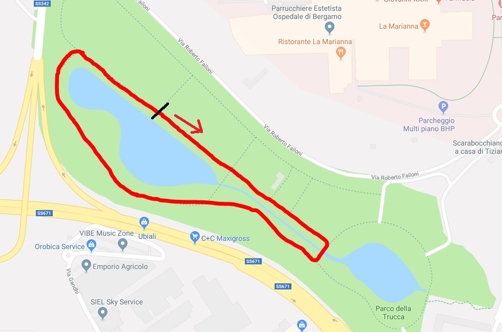
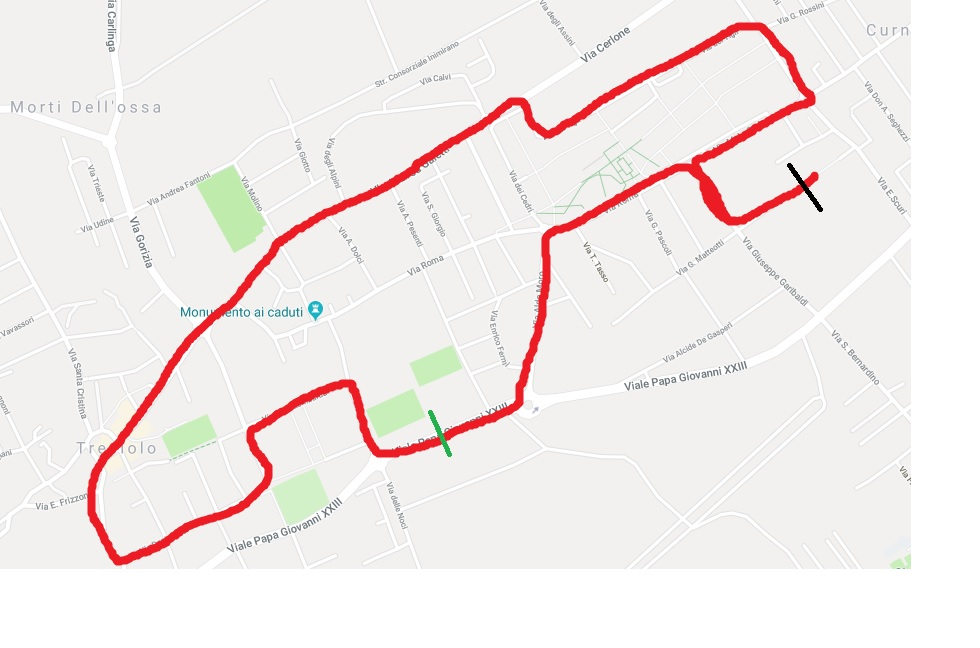

| Tappa |
Nome |
Planimetria |
Descrizione |
Vincitore |
Tempo |
| 1 |
Cronometro Parco della Trucca |
 |
Un giro in senso orario del Parco della Trucca a Cronometro. 3 tentativi per ogni partecipante, verrà preso in considerazione solo il miglior tempo |
---- |
Tempo |
| 2 |
Ex Tour de Fiasc storico Treviolo |
 |
Partenza e arrivo in via Cavour dopo aver toccato i punti più prestigiosi del paese come Le Vasche, il Bar delle Ascelle e l'Osservatorio. Traguardo volante nel parcheggio di fronte alla biblioteca |
---- |
Tempo |
| 3 |
Stezzano-Lallio (Madonna dei C(r)ampi) |
 |
Partenza da Oscar e arrivo alla Madonna dei Campi |
---- |
Tempo |
| 4 |
Lallio-Sforzatica |
IMMAGINE |
|
---- |
Tempo |
| 5 |
Scalata Città Alta |
IMMAGINE |
Partenza da Curnasco e arrivo in cima alla salita di Città Alta. L'arrivo è valido anche come GPM |
---- |
Tempo |
| 6 |
Roncola - Parco del Brembo - Curno |
IMMAGINE |
Partenza dalla Roncola e arrivo a Curno. Gran Premio della Montagna in cima allo strappo del parco del Brembo |
---- |
Tempo |
| 7 |
Tappa Treviolo a Giro |
IMMAGINE |
???Chiedere a Cornelius |
---- |
Tempo |
| 8 |
Cronometro finale della Trucca |
IMMAGINE |
3 giri in senso antiorario del Parco della Trucca a Cronometro |
---- |
Tempo |